Dùng đúng phạm vi bằng chứng Ảnh website chứng minh những gì được nhìn thấy trong phiên kiểm tra. Code checkout chứng minh cách triển khai tại commit 288a3a3; chưa xác định revision đang deploy có trùng checkout không. Không tạo giao dịch bán thuốc, thanh toán, hủy hay chuyển kho trong phiên này.
Phát hiện cần sửa: hóa đơn khách có số lô dự phòng L-202604 và HSD cố định 12/2027; tracking dựng theo thời gian; khối RFM gọi tên không khớp tài khoản. Các mục này cần ghi Partially resolved .
Bảng feedback tiếng Anh + toàn bộ source links
E01 E02 E03 E04 E05 E06 E07 E08 E09 E10 E11 E12 E13 E14 E15 Ảnh nên chọn để trình bày Feedback Evidence Status phù hợp Branch management E04 + C10Implemented; authorization testing pending Supplier qualification E05 + C04Partially resolved FEFO / batch traceability E07 + C01Partially resolved AI integration E02 , E10 + C08Implemented; validation pending Personalization E13 + C09Partially resolved Invoice batch + expiry E14 + C03/C12Partially resolved Order tracking E15 + C07UI implemented; real tracking pending
E01 · Ảnh chụp website
Website đang triển khai https://abcpharmacy.store/ Chứng minh được: Trang chủ truy cập được và có danh mục sản phẩm.
Giới hạn: Các cam kết marketing/chứng nhận trên UI không phải bằng chứng kiểm định hay số liệu vận hành.
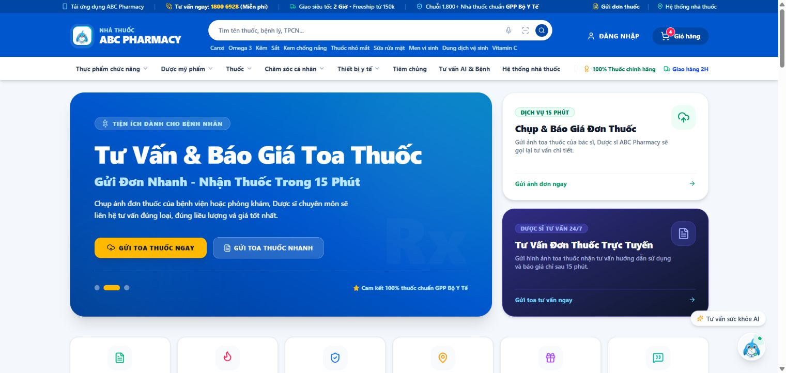
Tải ảnh gốc E01
E02 · Ảnh chụp website
Chatbot trả lời câu hỏi demo https://abcpharmacy.store/ Chứng minh được: Đã gửi câu hỏi giới thiệu chức năng, không chứa dữ liệu cá nhân; đã nhận phản hồi trong chat.
Giới hạn: Chứng minh vòng gửi/nhận chat, không chứng minh độ chính xác y khoa, model thực chạy hoặc chất lượng RAG.
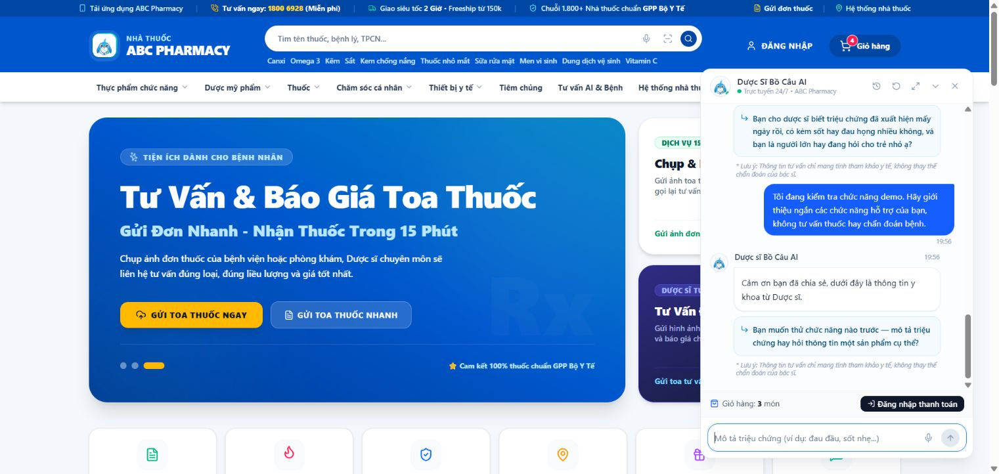
Tải ảnh gốc E02
E03 · Ảnh chụp website
Biểu mẫu gửi đơn thuốc https://abcpharmacy.store/ Chứng minh được: Mở được biểu mẫu nhận thông tin và tệp đơn thuốc.
Giới hạn: Chưa upload ảnh; không dùng ảnh này để khẳng định OCR đã đọc đúng hoặc file được lưu an toàn.
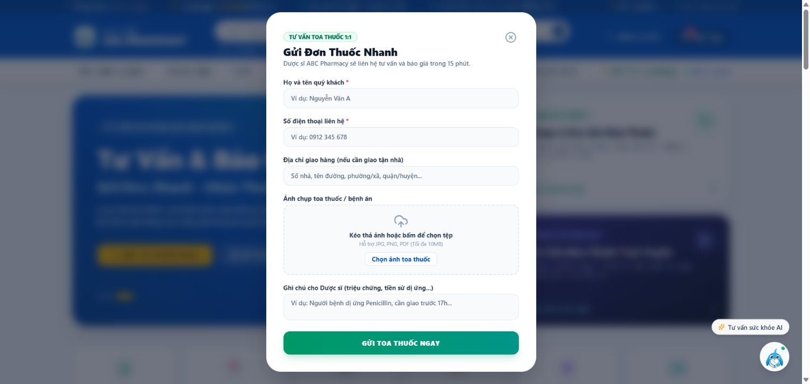
Tải ảnh gốc E03
E04 · Ảnh chụp website
Quản lý nhiều chi nhánh https://abcpharmacy.store/admin/branches Chứng minh được: Danh sách tải được nhiều cơ sở với trạng thái, địa chỉ, nhân sự và tồn kho.
Giới hạn: Chưa kiểm thử tạo/sửa, cách tính chỉ số hay cách ly dữ liệu giữa chi nhánh. UI còn tên VinaPharmacy và ảnh lỗi.
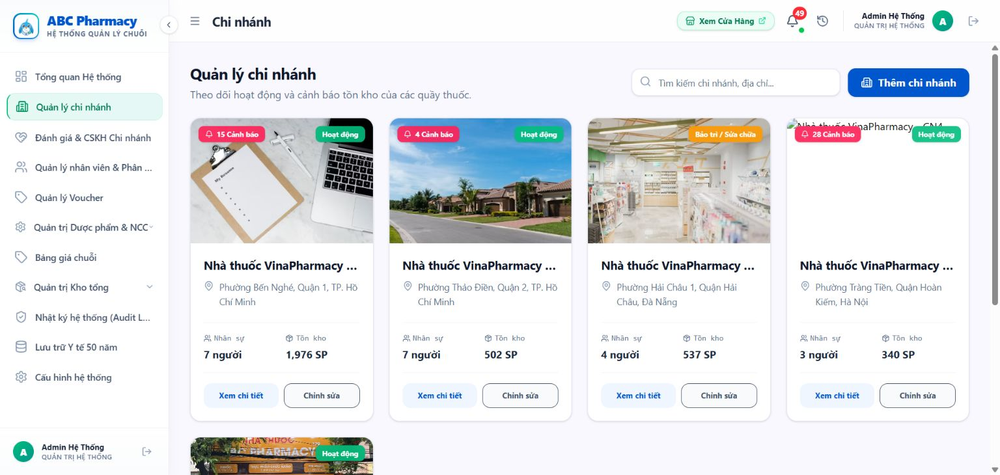
Tải ảnh gốc E04
E05 · Ảnh chụp website
Hồ sơ và cảnh báo GDP nhà cung cấp https://abcpharmacy.store/admin/master-data/suppliers Chứng minh được: Có hạn GDP và nhãn HỢP LỆ / HẾT HẠN GDP. Một số hàng hết hạn vẫn có trạng thái Đang hoạt động.
Giới hạn: Ảnh chứng minh cảnh báo; chưa thực hiện PO để kiểm tra chặn. Code PO tự động hiện có đường chỉ cảnh báo rồi tiếp tục.
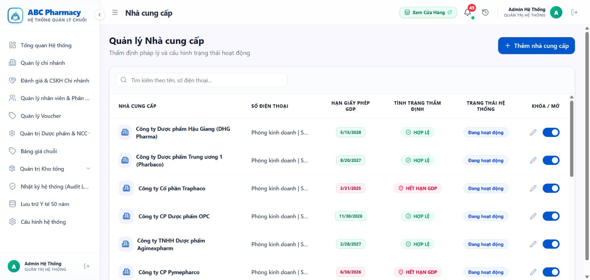
Tải ảnh gốc E05
E06 · Ảnh chụp website
Xuất hủy chưa tải được lịch sử https://abcpharmacy.store/admin/inventory/dispose Chứng minh được: Mở được trang xuất hủy nhưng lịch sử giữ trạng thái đang tải trong các lần kiểm tra.
Giới hạn: Không phải evidence biên bản hủy hoàn chỉnh. Không lấy 0 phiếu khi đang tải làm dữ liệu cuối; nhãn 100% không được kiểm chứng.
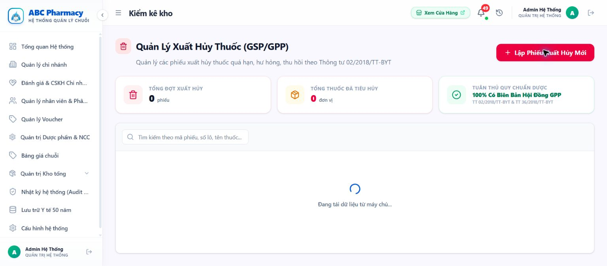
Tải ảnh gốc E06
E07 · Ảnh chụp website
Tồn kho theo số lô và HSD https://abcpharmacy.store/admin/inventory Chứng minh được: Mở được chi tiết nhiều lô của cùng thuốc, có mã lô và ngày hết hạn.
Giới hạn: Chưa bán/chuyển kho; chưa có chứng cứ lô nào bị trừ trước. Dropdown còn bị cắt ở mép bảng.
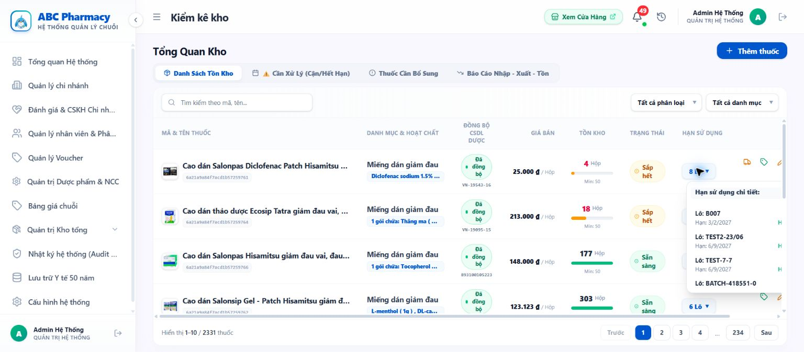
Tải ảnh gốc E07
E08 · Ảnh chụp website
Lịch sử OCR chi nhánh demo đang rỗng https://abcpharmacy.store/pharmacist/ocr-history Chứng minh được: Trang audit OCR tải xong, chi nhánh được chọn chưa có lịch sử.
Giới hạn: Không chứng minh OCR không hoạt động ở mọi chi nhánh; chưa chạy lượt OCR mới trong phiên này.
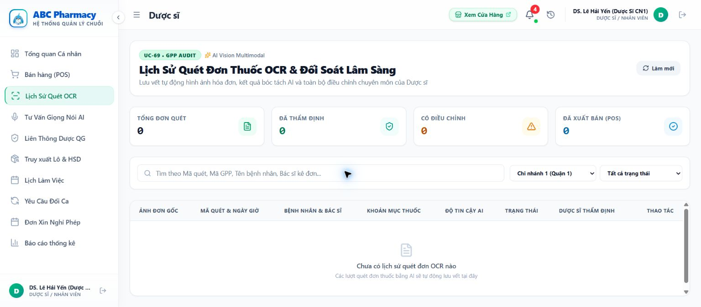
Tải ảnh gốc E08
E09 · Ảnh chụp website
Bản ghi voice và trạng thái audit https://abcpharmacy.store/pharmacist/ai-consultation Chứng minh được: Màn hình tải 10 bản ghi, có văn bản STT, gợi ý AI và trạng thái dược sĩ; tại thời điểm chụp chỉ số là 3 xác nhận, 0 đồng bộ đơn.
Giới hạn: Đây là bản ghi đã tồn tại; chưa chạy ghi âm mới, nghe đối chiếu audio hay kiểm chứng tính đúng đắn của xác nhận.
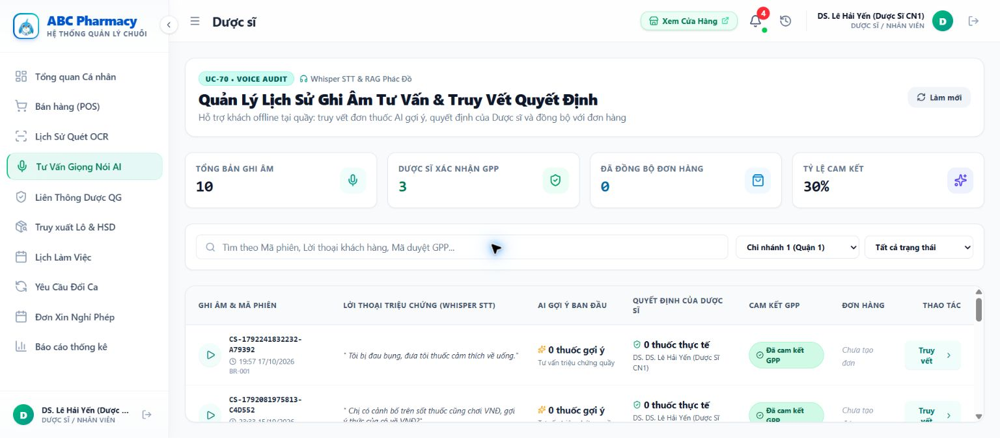
Tải ảnh gốc E09
E10 · Ảnh chụp website
Đối soát gợi ý AI và lựa chọn dược sĩ https://abcpharmacy.store/pharmacist/ai-consultation Chứng minh được: Bản ghi CS-1791205166467-2EA5B4 mở được văn bản STT và hai cột 3 thuốc AI / 3 thuốc dược sĩ.
Giới hạn: Chứng minh có lưu và xem hồ sơ; chưa chứng minh quyết định được xác nhận đúng người/đúng thời điểm. Code khởi tạo tự đồng thuận vẫn cần sửa.
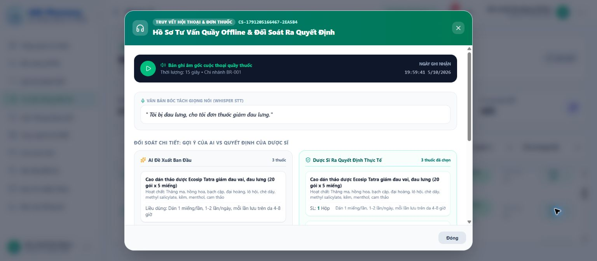
Tải ảnh gốc E10
E11 · Ảnh chụp website
Lịch sử hóa đơn phía dược sĩ đang tải https://abcpharmacy.store/pharmacist/sales Chứng minh được: Tab đổi trả/hóa đơn đã mở nhưng danh sách chưa tải xong trong thời gian quan sát.
Giới hạn: Chưa có bản in POS từ tab này. Đã tìm được chứng từ phía khách ở E14, có vấn đề dữ liệu ghi cứng.
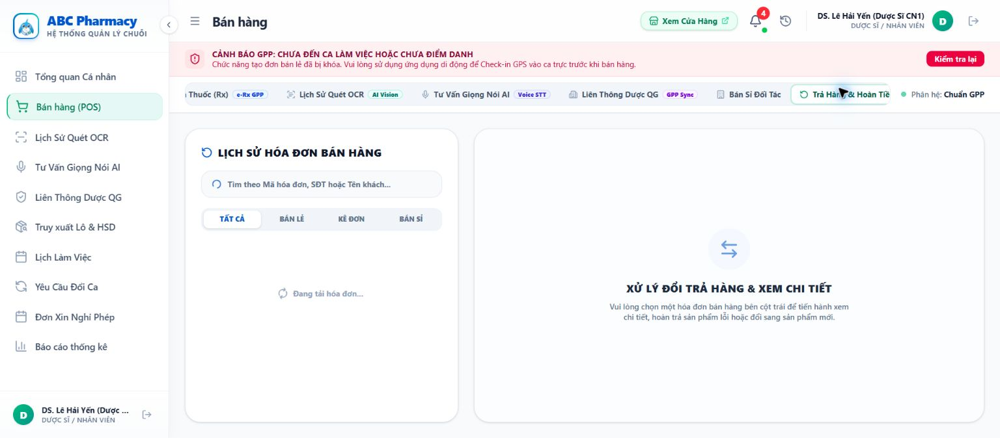
Tải ảnh gốc E11
E12 · Ảnh chụp website
POS thông báo chưa có ca/điểm danh https://abcpharmacy.store/pharmacist/sales Chứng minh được: UI thông báo khóa tạo đơn khi chưa đến ca hoặc chưa điểm danh.
Giới hạn: Chỉ quan sát UI, không giả lập check-in hoặc tạo đơn để kiểm thử backend guard. Chuẩn bị ca hợp lệ trước demo FEFO.
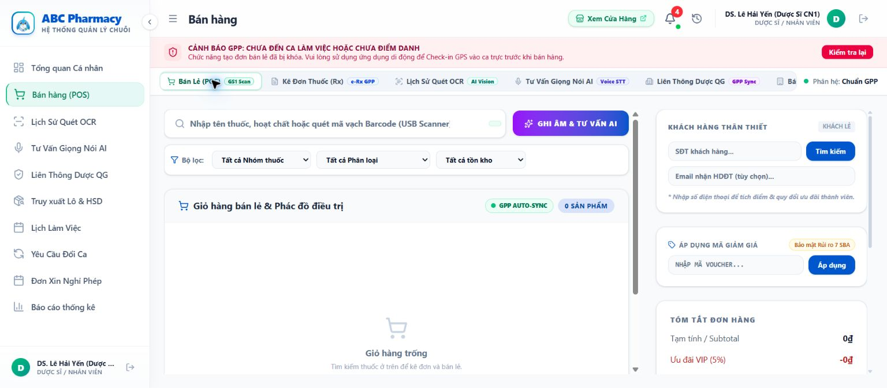
Tải ảnh gốc E12
E13 · Ảnh chụp website
Nhắc mua lại theo RFM https://abcpharmacy.store/ Chứng minh được: Sau đăng nhập khách demo xuất hiện khối nhắc mua lại và mã voucher.
Giới hạn: Tên tài khoản Nguyễn Văn An nhưng khối nhắc gọi Trần. Cần kiểm tra ánh xạ profile–phone–RFM/cache; chưa đủ bằng chứng quy nguyên nhân hay kết luận lộ dữ liệu.
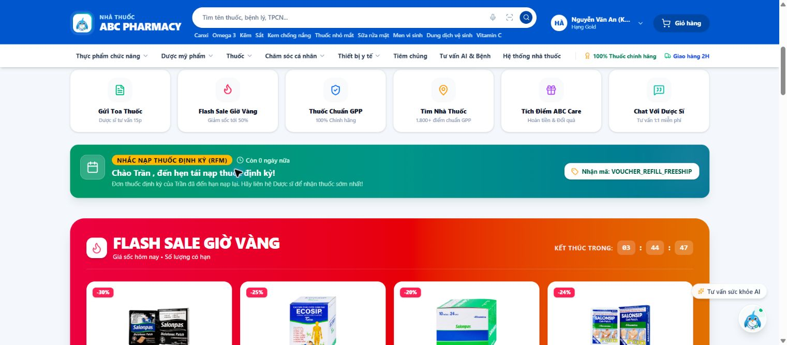
Tải ảnh gốc E13
E14 · Ảnh chụp website
Hóa đơn có cột lô/HSD nhưng dữ liệu ghi cứng https://abcpharmacy.store/customer/orders Chứng minh được: Chứng từ POS-D02358 hiển thị lô L-202604 và HSD 12/2027. Ảnh chỉ chụp bảng thuốc, không có thông tin liên hệ khách.
Giới hạn: CustomerOrders.tsx dòng 1055 dùng batchNo fallback; dòng 1056 ghi HSD cố định. Không dùng ảnh này để khẳng định truy vết lô/HSD chính xác.
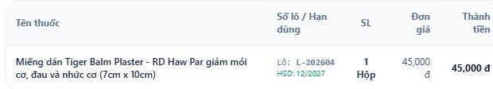
Tải ảnh gốc E14
E15 · Ảnh chụp website
Tracking có giao diện nhưng chưa chứng minh event thật https://abcpharmacy.store/customer/orders Chứng minh được: Mở được bản đồ/tracking cho đơn 10651976, có hành trình và dữ liệu giao nhận.
Giới hạn: Code tạo mốc theo +8/+18/+30/+45 phút, shipper và nhiệt độ ghi cứng. Đây là evidence UI, không phải evidence tích hợp vận chuyển hay IoT thật.
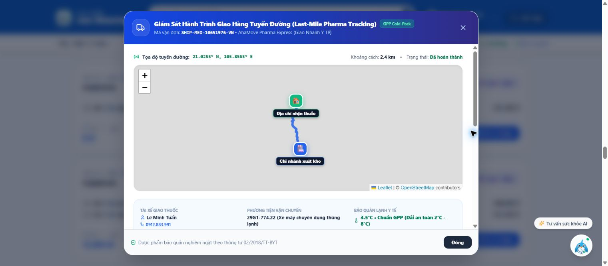
Tải ảnh gốc E15
Source evidence Các tệp trích đoạn giữ nguyên nội dung mã nguồn, có số dòng và GitHub link gắn commit.
Jira/Report 2 alignment và mô hình gói doanh nghiệp vẫn cần bằng chứng quản lý/business. Git history có nhiều alias và thành viên cũ; không dùng số commit làm % đóng góp.